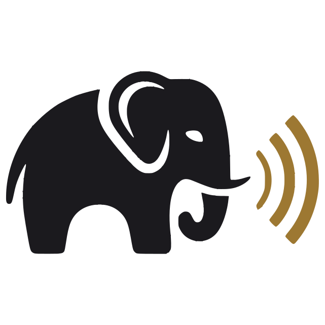
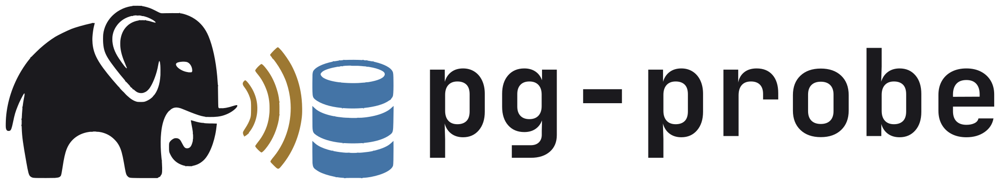
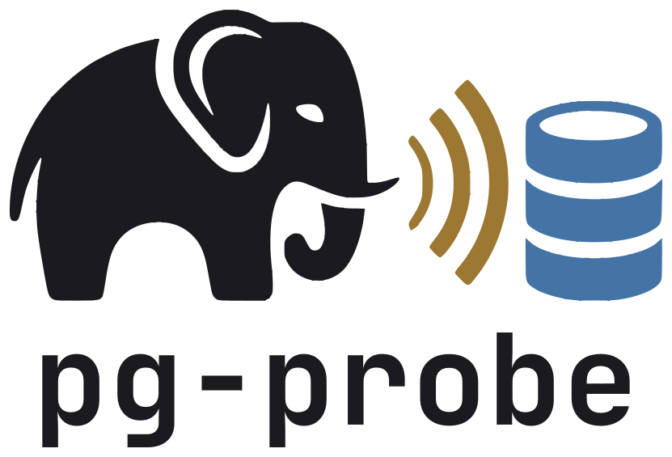

pg-probe brand usage
1. In the console
The header shows the emblem 32 px high in place of Kiso's BrandMark. The elephant takes the text color. The waves and the database keep the brand colors in both themes.
pg-probe
pg-probe
2. In the browser tab
The favicon is the elephant and the waves, without the database, so it reads at 16 px. It follows the system theme. Switch your system theme to see the other colors.

pg-probe console3. Lockups: pick the file by the background
Use the light file on a light background and -dark on a dark one. Use the stacked lockup where space is narrow.

lockup.svglockup-dark.svg

lockup-stacked.svg
lockup-stacked-dark.svg4. One color: currentColor
The -mono files and the wordmark use currentColor. Through <img>, as here, they are black. Inline the SVG to give them the CSS color.
lockup-mono.svg
mark-mono.svg
elephant-mono.svg
wordmark.svg
5. Minimum size
The emblem reads from 32 px high. Below that, use the favicon. This sample follows the system theme.
16 px: favicon
6. Rules
Do
- Use SVG, not PNG.
- Pick the file by the background.
- Keep the emblem's colors.
- Leave clear space around it.
Do not
- Change the wordmark's font.
- Stretch or rotate the emblem.
- Use the emblem below 32 px high.
- Put the light file on a dark background.